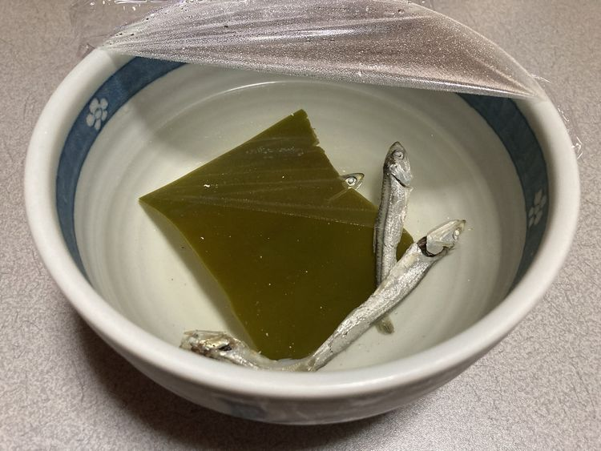
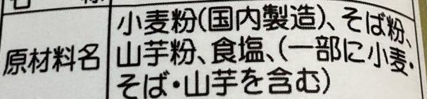
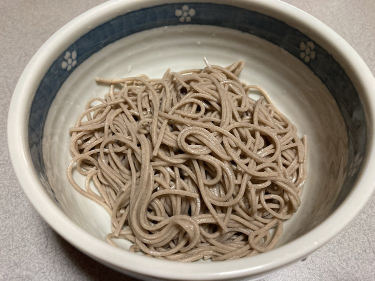
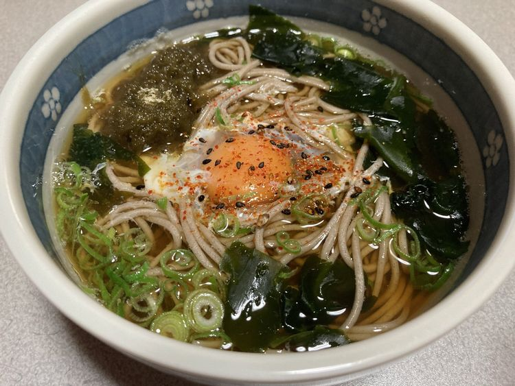
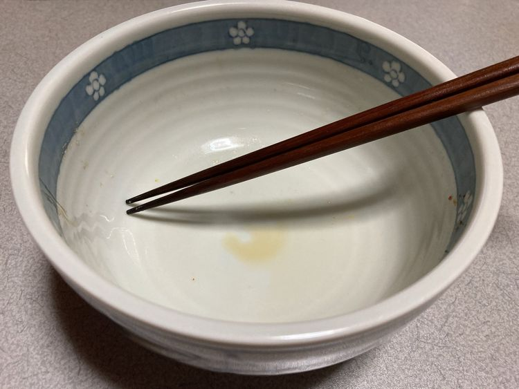
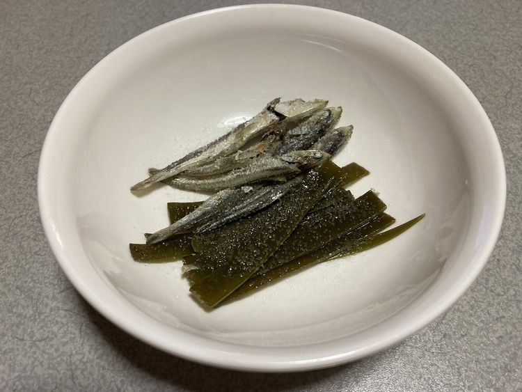

| 第１回：まずは心意気の問題 |
|
世に数多くの創作論あれど、その多くはオレに言わせれば間違っている。 しかも、大間違いだ！ そもそも貴様たちのような矮小極まりないド素人の妄想など、己の思い通りに表現できるわけがない。 しかし、まぁ、そんなことを言っていても仕方がない。 ここで数ある小説賞に総ナメられてきたオレが、創作における作法ってやつを伝授してやろうと思ふ。 まず、最初の一歩だ。 キーボードを捨てろ。 紙とペン？ そんな高尚なもの、貴様たちにはまだ必要ない！ 小説とは、イマジネーションだ。 イマジネーションが、すべてを変える。 そんなわけで――まず用意するのはドンブリだ。 どんだけしみったれたクッソ・ビンボー人の貴様でも、ドンブリくらいは持っているだろう。 そこに、水を入れろ。 そうだな、うん、３５０～４０0mlってトコだ。 その中に、西側では『いりこ』、東側では『煮干し』と呼ばれる例の小魚をブチ込む。 それから昆布も、ひと片な。 そしてそれを、一晩、まぁ、昼間でも８時間程度放置する。 このクッソ暑い中、常温で放置するバカには、すでに小説を書く資格はない。 いきなり脱落だ。 冷蔵庫があるだろう。 あと「文明の力（りき）」って勘違いしてるアホをたまに見るが、「文明の利器（りき）」な。 文明のパワーって、お前、それ、どうなんだよ？ そのまんまじゃねぇか。 そんな間違いをしてる貴様のようなアホは、ペンライトでも振り回しながら「〇〇ちゃん、今までホントにありがとぉ～！」的な、アイドルの卒業ライブにでも行っとけ。 そっちの方が、間違いなく人生の糧になる。 ちなみにオレは、がな初期からの激ヤバおひさまだ。 で、まぁ、それを放置し、冷蔵庫から取り出したのがコレだ。  ここで重要なのは、「時間を経なければ、手に入らないものもある」というこの世界の真実だ。 貴様のようなドサンピンが、パッと思いついただけで名作など書けるわけがない。 ここだけは、絶対に勘違いするな。 いいか？ 思いつき、思い込みは、非常に危険だ。 「いや、お前、絶対イケるって！」と友だちに背中を押され、コクッた挙句、「ごめん。友だちのままでいよう」とやんわり断られた過去を思い出せ。 時間をかけろ。 時間をかけて、「あれ？ 〇〇くん、ちょっといいかも」と、相手が勘違いするのを待て。 そんなわけで、ここまで到達したら、もうすぐだ。 ソバを茹でろ。 表示時間より一分早くな。 茹ったらザルにあげ、水でゴシゴシとよく洗う。 ここ、非常に重要だ。 死ぬほど洗え。 貴様の人生にしみついた、ゴミみたいな過去を洗い落とすようにな。 ちなみに貴様たちドビンボー人がよく食うスーパーのソバ（棒の乾麺）は、厳密に言うと「ソバ味のうどん」だ。 表示を見ろ。  小麦粉が最初に書いてあるってことは、小麦粉がメインってことだ。 スーパーに行った時、十割ソバの袋を見たらわかるが、一番最初に書いてあるのは「そば粉」。 これは、もぉ、「そば粉がめっちゃメインっス」ってことを意味する。 無論、そば粉「８」小麦粉「２」っつー「二八そば」ってのもある。 この二八には、わりとファンが多い。 ま、たしかに十割はポロポロなっちゃうけど、二八はしっかりしてるもんね。 たまに「健康のために毎日ソバを食ってます！」とドヤるヤツがいるが、スーパーのソバ食ってるヤツは「健康のために毎日ソバ味のうどん食ってます！」と同義である。 あとオレのダチでスーパーのソバの茹で汁にダシを入れ「やっぱソバ湯やな……」とイキッてたアホがいるが、「お前、それ、ほぼほぼ小麦粉湯だぞ？」と説明するのもメンドいので黙っておいた。 おめぇは、もぉ、一生それでいいや。 そんなわけで、茹でたのがコレだ。  ちなみにオレは金持ちなので十割が基本だが、二八の粋な感じもスッ飛ばし、今回はスーパーの乾麺だ。 正直に言うと、私、十割を食べるのは年一です。 ほとんどスーパーの乾麺です。 そんなわけで、ここでさっきのダシが再登場。 味つけはシンプルに、醤油のみ！ 大さじ２ってトコか？ 甘えるな！ ダシの味は、貴様唯一のオリジナリティだろ！ 調節は自分でしろ！ そんなわけで、本日のオレは「ふえるわかめ」を入れてみる。 あと、ネギとトロロと生タマな（天カスは切れてた）。 完成。  完食。  と、まぁ、並の人間なら、ここで終わる。 だがオレは、ダシを取ったあとの小魚と昆布をテキトーに焼き、塩を振る。 これで、ちょっとしたツマミに早変わりだ。  うん。 ビールに合うね。 そんなわけで――今回の講義はこれで終わりだ。 以上をこなせば、貴様の腹も満たされ、イマジネーションが爆増！ とびっきりくだらないアイデアが、モリモリと湧き出てるはずである。 次回も、死ぬほどヒマな時に更新する。 その日まで、どうかこの基本を何度も繰り返してほしい。 さすれば――貴様のような人間にも、他人の魂を震わせるような名作が書けるはずだ！ じゃ、また、次回まで。 チャオ♪ |